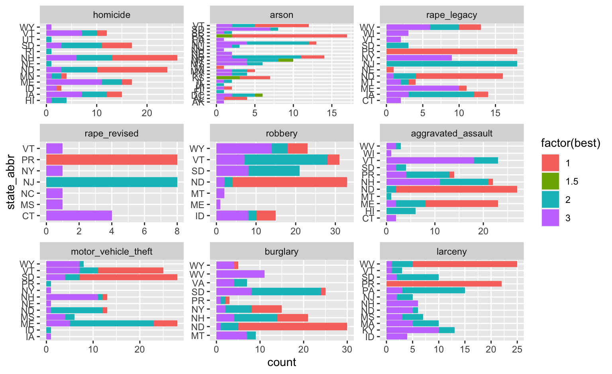

Your turn

For this your turn use the fbi
data from the classdata package
- Use
mutateto reorder types of crimes by (median) rate. - Plot crime rates by type in side-by-side
boxplots. Medians of the boxplots should be
ordered.
Your turn: group_by and mutate
For this your turn use the fbi
data from the classdata package
- Find the ranks for all rates of crime by type of crime and year.
- Focus on the top states. Find a visual
that shows how often each state managed to take the top spot since
1961.
fbi <- fbi %>% group_by(type, year) %>% mutate(
best = rank(rate, na.last = "keep") # ranks from lowest rate to highest rate
)
fbi %>% filter(best <= 3) %>%
ggplot(aes(x = state_abbr)) +
geom_bar(aes(fill=factor(best))) + facet_wrap(~type, scales="free") + coord_flip()